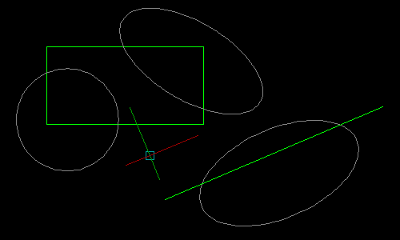

Circle Break
This page is delivered for consistency purposes only, as part of the LeeMac sample module of DynALisp, which shows how DynALisp turns existing AutoLISP programs into a module. The program and its description are the work of Lee Mac, who keeps all the credit for them. The original page, with the latest version, is on Lee Mac's website: https://lee-mac.com/circlebreak.html
See also Object Break.
| Function Syntax | LM-CircleBreak – original syntax: cbrk (see aliases) |
| Current Version | 1.3 |
| Compatible with AutoCAD for Mac? | No |
| Compatible with AutoCAD LT? | Yes |
| Original Page | lee-mac.com/circlebreak.html |
Program Description
This program enables the user to break a circle or ellipse into two separate arcs at given points, with one arc inheriting properties specified within the program source code.
The program was predominantly written to decrease the time taken to display hidden sections of circular or elliptical geometry. Previously, to construct a circle or ellipse displaying two different linetypes (perhaps indicative of hidden detail), users would be required to break or trim the original circle or ellipse using intersecting objects or points, and then either construct the second arc manually, or create another identical circle or ellipse and repeat the breaking or trimming process; before finally moving one of the arcs to a separate layer or applying a set of properties.
To save substantial time in this procedure, this program allows the user to select the circle or ellipse at the section to be 'hidden', and then pick two break points. The remaining operations are then completed instantaneously by the program.
The properties (such as Layer, Linetype, Lineweight etc.) to be applied to the 'hidden' arc may be changed at the top of the program source code, where noted.
Finally, this program will operate successfully in all UCS & Views, with circles and ellipses constructed in any UCS plane.
Demonstration

See also Object Break.
Bundled program notes
;;-------------------------=={ Circle Break }==-------------------------;;
;; ;;
;; This program enables the user to break a circle or ellipse into ;;
;; two arcs, one of which will inherit properties set within the ;;
;; program source code. ;;
;; ;;
;; The program was written to decrease the time taken to display ;;
;; hidden sections of circular or elliptical geometry. Previously, ;;
;; to construct a circle or ellipse displaying two different ;;
;; linetypes (perhaps indicative of hidden detail), users would need ;;
;; to break or trim the original circle or ellipse using intersecting ;;
;; objects or points, and then either construct the second arc ;;
;; manually, or create another identical circle or ellipse and ;;
;; repeat the breaking or trimming process; before finally moving one ;;
;; of the arcs to a separate layer or applying a set of properties. ;;
;; ;;
;; To save time in this procedure, this program allows the user to ;;
;; select the circle or ellipse at the section to be 'hidden', and ;;
;; then pick two break points. The remaining operations are then ;;
;; completed instantaneously by the program. ;;
;; ;;
;; The properties (such as Layer, Linetype, Lineweight etc.) to be ;;
;; applied to the 'hidden' arc may be changed below where noted. ;;
;; ;;
;; Finally, this program will operate successfully in all UCS & Views, ;;
;; with circles and ellipses constructed in any UCS plane. ;;
;;----------------------------------------------------------------------;;
;; Author: Lee Mac, Copyright © 2013 - www.lee-mac.com ;;
;;----------------------------------------------------------------------;;
;; Version 1.3 - 30-05-2013 ;;
;;----------------------------------------------------------------------;;
Command Names And Aliases
As in every DynALisp module, each program of this sample module has one main command, named LM-*, and the original command names of Lee Mac's page are kept as its aliases: they run the same command, and can be added, renamed or removed in Dyl-Suite (saved in Resources\Aliases.csv).
| Command | Aliases | Name |
|---|---|---|
| LM-CircleBreak | CBRK | Circle Break |